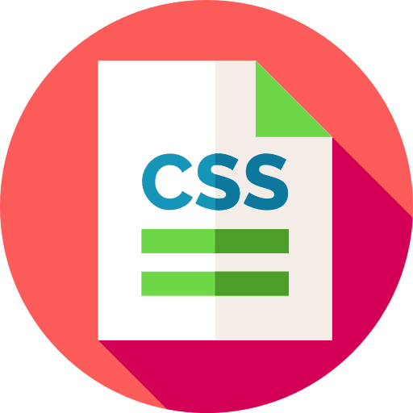

Projets

AnnoTweet
Un site web dynamique principalement dédié aux linguistes pour faire de l'annotation de textes en registres de langue.

CV Responsive
Une version Web & responsive de mon CV avec les composants Bootstrap.

Le jeu du Juste Prix
Le Juste Prix, juste pour le fun !

Application météo
Une application météo pour voir le temps qu'il fait où vous êtes ou dans la ville de votre choix.

To-do list
Amusez-vous à créer et supprimer des tâches à faire dans cette to-do list.

Recherche d'utilisateur GitHub
Une barre de recherche pour rechercher tous les utilisateurs GitHub.

Générateur CSS de dégradé linéaire
Un petit outil utile pour les développeurs Web.
Générateur CSS pour la stylisation d'images
Un autre petit outil utile pour les développeurs Web.